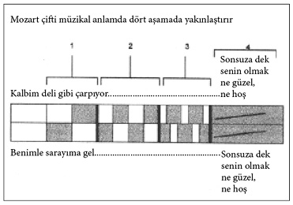

Don Giovanni (1787)
İtalya’da bir şehir. Saatler gece yarısını geçmiştir. Neredeyse donmak üzere olan Leporello, seksek oynar gibi bir o ayağının bir diğerinin üzerinde hoplayarak Donna Anna’nın evinin önünde nöbettedir. Efendisi içeride güzeller güzeli Donna ile birlikte keyif sürer. Leporello ise her zamanki gibi kapının önünde beklemektedir. Komik bir maaşla geçinir, itilip kakılır ve hatta azar işitip tehditlere maruz kalır. Buna daha fazla dayanamayacaktır. Hepsi bu kadar da değildir: Soylular soylusu Don Giovanni’nin kadınlara karşı tutumu, onları aldatması, baştan çıkarması, gülünç duruma düşürmesi katlanılacak şeyler değildir. Üstelik Don Giovanni zor durumda kalıp da bir adamın elinden kaçamayacağını anladığı an çareyi onu bıçaklamakta bulur. Leporello bunun gibi altı vaka hatırlar. Aslında baştan çıkardığı kadın sayısının yanında bunların lafı bile olmaz. Efendisinin baştan çıkardığı kadınları numaralayıp, isim ve olay yerine göre özenle kayda geçme işi de Leporello’ya aittir. Bugüne dek tam bin dört yüz genç kız ve kadını deftere kaydetmiştir. Efendisi titizliğe önem verir. Ahlakmış, edepmiş Don Giovanni bunlara güler geçer. Leporello kesin kararını vermiştir, daha fazla bu adamın hizmetinde çalışmayacaktır. İlk fırsatta bunu ona söyleyecektir.
Kafasından bunlar geçerken aniden bir gürültü olur. Leporello’nun hiç şüphesi yoktur: “Efendimin başı yine derde girdi!” Don Giovanni telaşla sokağa fırlar, bir eliyle yüzünü kapatmıştır, diğeriyle de Donna Anna’yı sürükler. Kız var gücüyle seslenir: “Ahali! Hizmetçiler! Yetişin, adam kaçırıyorlar!” Kim olduğunu bilmediği maskeli adama, “Umarsız bir intikam meleği gibi kovalayacağım seni!”
Kızın babası, çıkan gürültüyü ve çığlıkları duyarak uyanır. O da koşarak evden çıkar ve kaçmak üzere olan ahlaksızın karşısına dikilir. Aralarında geçen kısa ama heyecanlı diyaloğun ardından ikisi de kılıçlarını çeker. Gözü kara Don Giovanni, kılıcını kızın babasına saplar. Korkusuz kahraman uşağıyla birlikte karanlıkta gözden kaybolmadan Leporello şöyle fısıldar: “Bravo, iki eğlenceli iş birden. Hem kıza tecavüz et, hem babasını öldür!” Ancak şu yanıtı alır: “Kendi istedi. Onun kadersizliği.”
Donna Anna ve nişanlısı Don Ottavio bir görevliyle birlikte ellerinde fenerlerle yaşlı adama yardım etmek için olay yerine gelirler, ancak adamın cesediyle karşılaşırlar. Anna gözyaşlarına boğulur. “Baba, babacığım!” diyerek hıçkıra hıçkıra ağlar. Anna’nın yüreğindeki acının derinliğini ve ağırlığını Mozart’ın müziği sayesinde daha iyi kavrarız.
Donna Anna, Resitatif / Düet: Buradaki labirenti andıran ses düzenini anlamak için tek bir parametre yeterlidir. Artık eli ayağı tutmaz olan, delilik sınırındaki Donna Anna bu labirentin koridorlarında sendeleyerek dolaşmaktadır – burada tek istisna sol bemoldür. Beşli ve dörtlü çemberinin tüm duraklarından geçer. Normalde Mozart’ın üç ton işaretinin dışına pek çıkmadığını biliyoruz. Bunun dışında kullandığı aşırı işaretlerden de söz edebiliriz. İşte bu tür işaretlere bu eserinde çokça rastlıyoruz: Daha başlangıçta kızın “Baba” sözü (mi bemol7), “Katil elindeki çelikle onu ölümcül bir şekilde yaraladı” (la bemol), si bemol tonu çevresindeki büyük dalgalanma ve bundan sadece sekiz ölçü sonra gelen kızın ölen babasının yüzüne bakarak söylediği, “soluk ve ölümün nefesi kadar soğuk” (fa diyez) kısmı.
Donna aklını yitirmiş gibi babasını sorar (si bemol majör). Nişanlısı cevap vermek ister, “baban” (si minör / re bemol) der ve sözlerine devam edemez. Ottavio Donna’ya fa majör temel sesinde eşlik eder. Gördüğü bu kötü manzarayı unutmasını ister. Babasının yokluğunu ona hissettirmeyeceğini söyler: “Kocan bir baba gibi seni koruyacak!”
Mozart, babasının yasını tutan genç kızın duygularını kendi ritmik, melodik, hareketli işitsel renk oyunlarıyla süslemiş, bunlara bir de tempo ve ton değişikliklerini eklemiştir.
Donna Anna kendine gelir. Nişanlısı yanındadır, kız ona babasını sorar, sonra ayağa kalkar ve nişanlısının, babasının öcünü alacağına dair söz vermesini ister. Ottavio büyük bir coşkuyla söz verir: “Aşkımız üzerine yemin ediyorum!” Babanın ölümünün getirdiği şok dalgası birçok şeyin üzerini örter.
Gece gece o ırz düşmanının eve nasıl girdiği ya da Don Giovanni ve Donna Anna karşı karşıya geldiğinde gerçekte neler yaşandığı konusu gündeme gelmez.
Yaşanan son olaylarla birlikte iyiden iyiye hırpalanan Leporello efendisinin hizmetinden çıkmak ister. Ne var ki bir türlü cesaretini toplayıp bu kararını ona söyleyemez: “Önemli bir konu vardı... son derece önemli... ama kızmayacağınıza söz verin... şunun şurasında biz bizeyiz... kimse duymaz bizi... her şeyi açıkça söyleyebilir miyim?” Asil, maceraperest efendisinin orada bulunması bile uşağın birden süt dökmüş kediye dönmesine yeter. Yine de, “Alçakça bir hayat sürüyorsunuz!” deme cüretinde bulunur. Sınıf bilincine sahip Don Giovanni, Leporello’dan gelen kınamaları ciddiye alacak değildir, onu bir el hareketiyle başından savar. Uşağı onun yaşam şeklini eleştirirse ne olacaktır yani! Önemli olan, gece bitmeden bir “ahu” ile daha buluşacak olmasıdır. Büyük bir heyecanla buluşacağı kadını bekler. Tüm algıları alarm durumundadır, gözlerini dört açmıştır, çünkü “kadın güzel bir şeye benzemektedir”. Don Giovanni keskin kulaklarını iyice açınca kadının “elbisesinin hışırtısını duyar”, artık kokusunu bile alabilmektedir: “Sessiz ol! Sanırım kadın kokusu alıyorum!” Kadının adı Donna Elvira’dır ve Don Giovanni ile kısa süren bir evlilik yaşamıştır. Bu eski çift gecenin karanlığında buluşacakları yeri ve zamanı konuşurken birbirini tanıyamamışlardır. Don Giovanni ve Leporello, cadde boyunca kendi kendine söylenerek yürüyen bu güzel yabancının sözlerine kulak kesilirler.
Donna Elvira “sadakatsiz” bir adama sövüp saymaktadır. Onu her yerde arayacaktır. Bulduğunda ise “lime lime doğrayacak, kalbini yerinden sökecektir”. Beklediği fırsat burnunun ucundadır. İkisi de birbirini görür görmez tanır. Don Giovanni hiç bozuntuya vermeden kadını, “Sevgili Donna Elvira” diyerek nazikçe selamlar ve ona düğünlerinden üç gün sonra Burgos’tan hiç iz bırakmadan ayrılışının nedenlerini açıklamaya çalışır. Elvira ona bu şansı tanımaz, kaçak damada saldırarak, ondan tüm sorularını yanıtlamasını ister. Don Giovanni söyleyecek söz bulamayınca genç kadını sakinleştirmesi için Leporello’yu öne sürer ve kimseye çaktırmadan ortadan kaybolur. Neye uğradığını şaşıran Leporello, çılgına dönen güzel kadını sakinleştirmenin yollarını arar. Önce efendisinin gönül maceralarını önemsiz olaylarmış gibi göstermeye çalışır. “Ne ilk ne de sondunuz, ya da son olacaksınız” der. Efendisi için tuttuğu randevu defterini çıkartıp, kadınların yaşadıkları ülkeler, şehirler, dış görünüşleri, saç renkleri, bedenleri, yaşları ve deneyimleri gibi detayların yer aldığı listeyi okumaya başlar. Kadın dikkatle Leporello’yu dinler. Sonra aldatılan kadının öfkesi yeniden kabarır: “Demek bu arsızın ihanetinin sınırları bu kadar geniş ha... İhanete uğrayan kalbimin öcünü alacağım!”
Küçük bir köy. Dans müziği çalmaktadır. Gürültülü bir ortamdır. İnsanlar içki içip şarkılar söylemektedirler. Köylüler düğün kutlamaları için bir araya gelmiş, eğlenmektedir. Bu Masetto ve Zerlina’nın düğünüdür. Damat altıncı hissi kuvvetli, mantıklı bir adamdır. Gelin ise tam bir yapma bebek gibidir, zır cahil olmasına karşın genç ve güzeldir. Don Giovanni uşağıyla birlikte düğüne katılır. Kadın avcısı Don Giovanni, neşe içinde eğlenen bunca genç kız ve kadın arasında dolaşıp durduktan sonra gelin ve damatla tanışır ve daha o anda gelini gözünü kestirir. Leporello’dan herkesi toplayıp şatoya götürmesini, onları orada eğlendirip tüm ihtiyaçlarını gidermesini ister. Düğün kutlamaları orada daha coşkulu bir biçimde devam edecektir. Gelinle bir an önce bir araya gelmek isteyen Masetto’yu gelinden uzak tutmak için özel bir muamele düşünülmüştür. Don Giovanni rahatsız edilmek istemez. Edilmez de.
Don Giovanni tecrübelidir. Gelini iltifatlarıyla tuzağına düşürür. “Şeker gibi tatlısın” der, şuh bakışlarına, kiraz dudaklarına övgüler yağdırır ve daha fazla oyalanmadan sadede gelir: “Hadi, hiç vakit kaybetmeyelim. Seninle hemen evlenmek istiyorum!” Zerlina başlangıçtaki kuşkularından kurtulmuştur, evlenmeyi kabul eder. Don Giovanni’nin şatosunda birlikte olacaklardır. Şatoya gitmek üzere yola koyulurlar. Yolda, “Elini ver bana, hayatım” diye ritmik biçimde biri diğerinin sözlerini tamamlayarak şarkı söylerler. Biri melodiye başlar, diğeri onun başladığı cümleyi tamamlar. Sonra da sevinç içinde senkronik biçimde, “Gel, neşemizi bulalım!” derler.

Elini ver bana hayatım, (Giovanni - Zerlina düeti)
1. aşama: İkisi de uzun cümleler kurarlar.
2. aşama: Birbirlerine yaklaşırlar, cümleler kısalır.
3. aşama: Birbirlerinin sözünü keserler.
4. aşama: Aynı zamanda aynı şeyleri söylerler.
İkili, şatoya giderken yolda Donna Elvira ile karşılaşırlar. Kadın olan biteni anlamakta gecikmez. Önlerini keserek Don Giovanni’ye çıkışarak ondan öcünü alacağını; gözleri önünde Zerlina’ya onun “kirli elli” bir kadın avcısı olduğunu açıklayacağını söyler.
Kurnaz düzenbaz kızın kulağına tüm bunların küçük bir şakadan başka bir şey olmadığını fısıldar. Boşuna çabalamaktadır. Öfkeli Elvira sözlerine devam eder: “Ne kadar acı şakalar yaptığını çok iyi biliyorum!” Bunu duyan Zerlina da şüphe duymaya başlayınca Don Giovanni başka bir oyuna baş vurmak zorunda kalır. Öfkeli Elvira’nın ruh hastası olduğunu söyler: “Zavallı, aşkından aklını kaybetmiş, beni sevgilisi sanıyor, ben de sırf acıdığım için bozuntuya vermiyorum.” Bunu dert edindiğine göre, demek adamın yumuşacık bir kalbi vardır. Zerlina bundan çok etkilenir. Ama Elvira yine araya girer. Kendi başından geçeni anlatır ve saf Zerlina’ya yalvarır: “Kaç, o haine inanma!” Donna Elvira genç kıza doğru gider, kolundan tuttuğu gibi kızı yanına çeker. Don Giovanni sövüp saymaya başlar. Bugün hiçbir şey yolunda gitmemektedir. Önce hiç hesapta yokken eski karısı Donna Elvira ile karşılaşmış, sonra da dil döktüğü Zerlina ile bir aşk gecesi geçirememiştir. Bunlar da yetmezmiş gibi bir de yoluna Ottavio ve Donna Anna çıkar, neyse ki henüz yaşlı adamı öldüren kişinin kimliğini tespit edememişlerdir. Ona gelip de katili bulmakta kendilerine yardım edip edemeyeceğini sorduklarında, hiç tereddüt etmeden kabul eder.
Şaşkın şaşkın dolanan Donna Elvira, Giovanni, Donna Anna ve kızın nişanlısı ile karşılaşır. Onları dikkatli olmaları için uyarır: “O düzenbaza güvenmeyin!” Giovanni yine o aşağılık oyalama numarasına soyunur, sinirden kudurmuş olan kadının aklını yitirmiş olduğunu söyler. Ne var ki bu kez karşısındaki o saf Zerlina değil, iki başka uyanık Anna ve Ottavio’dur. Biraz düşündükten sonra ikileme düşerler: “Kime güvenmeliyiz o halde?” İkisi de burada bir dolap döndüğünü anlar. Ottavio, “Her şey açıklığa kavuşana kadar vazgeçmeyeceğim” der. Giovanni Elvira ile birlikte giderken, kızla ilgilenmesi gerektiğini söyler. O sırada Donna Anna var gücüyle haykırır: “Babamı o öldürdü!” Adamı, fısıldamasından ve sesinden tanımıştır. Donna Anna, Ottavio’yu teşvik eder: “Babamı öldüren caninin kim olduğunu artık biliyorsun, o halde ne duruyorsun, hadi işbaşına!”
O anda Donna Anna nişanlısına cinayetin işlendiği gece olup bitenleri anlatır. Don Giovanni gecenin karanlığında evlerine girmiş, Anna’ya tecavüz etmek istemiştir. Genç kız çığlık atınca boğazına sarılmıştır. “Duyduğu acının ve adamın o iğrenç girişiminin” verdiği olağanüstü güçle hırsızın elinden kurtulmayı başarmıştır. Bir kez daha çığlık atınca hırsız korkup kaçmaya başlamıştır, kız da onun koluna yapışmış, caddeye kadar çıkmışlardır: Anna, “Artık kovalanan değil, kovalayandım” der. Sonra ise babası yardımına koşmuştur. Ottavio olayın acı sonunu bilmektedir. Derin bir nefes alır. O korktuğu şey Anna’nın başına gelmemiştir.
Dolandırdığı bir diğer kişi de Zerlina’nın nişanlısı Masetto’dur. Gelini düğün gecesinde bu çapkına kaptırmıştır. Köylü, genç kızı suçlamaktadır. Hakaretler yağdırır, kıza “Yılan, fahişe, benim gibi sözünün eri bir çiftçiye bunu nasıl yaparsın” diye söylenir. Bunu gerçekten de hak etmemiştir. Hem bu skandal ışık hızıyla dört bir yana yayılacak, genç adamın şanına gölge düşürecektir. Masetto’nun uçarı sevgilisi kelebek gibi gönülden gönüle konmaktadır. Düşüncesizce o soylu adamın peşinden gitmiş, onun kibar tavrından etkilenmiştir. Masetto bu duruma tepki verince de kız tüm saflığıyla yarı çocuksu, yarı komik bir tavır takınır. Masetto’dan dayak yemeye razıdır. “Hıncını al! Beni öldüresiye döv, istediğini yap bana, ama sonra Masetto, sonra huzura erelim... Gece, gündüz mutlu bir hayat geçirelim” der. Ancak daha o gece Giovanni kendisini arzuladığını söylediğinde pek direnç göstermez. Giovanni, “Her şeyim, aşkınla yanıyorum... Gel... Seni mutlu edeceğim” der ve kızı, Masetto’nun onları dinlemek için saklandığı duvarın dibine götürür. Zerlina ile birlikte damadı arıyormuş gibi yapmaya başlar. Ancak kızı tavlamaktan vazgeçmiş değildir. Sahte bir tavır takınır, iyi kalpli ev sahibini oynamaya başlar. “Haydi üçümüz de gidip içerideki misafirlerle birlikte dans edelim” der. Kutlama başlamıştır, beyefendi balo salonunda misafirlerinin karşısına çıkar. Konuklar arasında maskeli üç kişi vardır. Bunlar Ottavio, Donna Anna ve Donna Elvira’dır.
Şatoda kutlama tüm hızıyla sürerken salonda tek dansa kalkmayan kişi Masetto’dur. Leporello isteksiz damadı dans alanına çekerken Giovanni etrafında pervane olduğu Zerlina’yı “hafif bir şiddet uygulayarak” özel bir odaya götürür. Olaydan kısa bir süre sonra içeriden yardım çığlığı duyulur. Biri, “İmdat, tecavüzcü!” ve “Yardım edin!” diye bağırır. Konuklar sesin geldiği yöne koşarlar, odanın kapısını kırıp içeri girerler. Leporello’yu da beraberinde sürükleyen Don Giovanni’yi kılıç çekmiş olarak bulurlar. Zerlina’yı tecavüzcünün elinden kurtaranın kendisi olduğunu sanmaları için çabalar. Leporello’nun yine onu bu zor durumdan kurtarması gerekmektedir. Ancak bu defa suçüstü yakalanan Giovanni paçayı kurtaramaz. Maskeli üç kişi kimliklerini açıklar. Anna ve Elvira, “Biz her şeyi biliyoruz, seni düzenbaz” derler. Ottavio yakalanan yalancıyı silahla zararsız hale getirir. Nihayet suçluyu yakalamışlardır. “Bu gece gününü göreceksin!” diye bir imada bulunurlar.
Leporello yine eveleyip gevelemeye başlar. Efendisine daha fazla hizmet etmek istemediğini kim bilir kaçıncı kez tekrarlar. Giovanni bunu yapması için bir neden göremez, ama yine de uşağına görevine devam etmesi için birkaç altın para teklif eder. Leporello bu seferlik görevini sürdürmeyi kabul eder. Bunu efendisinin hatırı için yapacaktır. Bu seferki kurbanı Elvira’nın hizmetçisidir. “Gece inmek üzere olduğundan” da acele etmesi gerekmektedir. Plana göre önce Elvira’yı evden çıkaracaklardır. Bu işi Giovanni kılığına giren Leporello üstlenecektir. Efendisi direktifleri verir: “Aşağıya indiğinde ona doğru koş, kızı kucakla ve birkaç kez okşa, sesimi taklit ederek onu ustalıkla başka bir yere götür.” Plan işler. Leporello efendisinin o yumuşak sesini öyle güzel taklit eder ki Elvira öç alma fikrinden uzaklaşarak sözde Don Juan’ın peşinden gider. Leporello’nun içi bir hoş olur. Bu sahneyi izleyen efendisi kıskanmaya başlamıştır. “Adam resmen âşık oldu!” der. Ancak bu ikiliden bir an evvel kurtulması gerekmektedir. Olduğu yerde gürültü çıkarmaya, sövüp saymaya başlar. Elvira ve Leporello korkarak oradan uzaklaşırlar. Donna Anna’nın evinin önüne geldiklerinde bir grup yollarını keser. Bunlar, Annave Zerlina, Ottavio ile Masetto’dur, onlara bir grup hizmetçi de eşlik etmektedir. Ellerinde fenerler vardır. Giovanni’yi bulduklarını sanırlar. “Bu sadakatsiz ölmeli” diye söylemeye başlayınca Leporello kimliğini açıklar ve af diler. Tüm bunların efendisinin bir oyunu olduğunu, onu bu kılığa sokanın da o olduğunu söyler. Yaşadıkları bu hayal kırıklığıyla daha da öfkelenen kalabalık hep bir ağızdan haykırır: “Onu da öldürelim!” Leporello son anda kaçarak paçayı kurtarır.
Leporello’nun kıyafetlerini giyen Don Giovanni bu arada girdiği uşak rolünün tadını çıkarır. Heyecan verici şeyler yaşar, hoşça vakit geçirir. Silahlanan Masetto, sevilmeyen kadın avcısına karşı bir tür sürek avı düzenlemek için gönüllü aradığını söyleyince, Giovanni ona katılır. Hatta bu işi organize bile eder. Bu arada sokakta rastladığı bir kızla (genç ve güzel) yakınlaşmıştır. Kızın ateşli öpüşleri ve okşamaları yüreğini hoplatır. Bu güzel kızın Leporello’nun sevgilisi olması ona en ufak bir rahatsızlık vermez. Ancak Leporello bu konuda efendisiyle aynı fikirde değildir. Efendisinin bu utanmazlığı nereye vardıracağını merak eder. “Peki ya karım olsaydı?” diye sorar. Giovanni güler, “Daha iyi ya” der.
Maskeliler, bir türlü yola gelmeyen Giovanni’yi tanımışlardır ve Giovanni’nin hafiyelerin gazabından kaçıp saklanabileceği güvenli bir sığınak kalmamıştır. Giovanni, Leporello ile birlikte çareyi mezarlığa saklanmakta bulur. Ortalık karanlıktır, gece olmuştur. Çapkın adam neşeyle ellerini ovuşturur: “Şimdi bizi arasınlar da bulsunlar bakalım!” İkili, tebdili kıyafet dolaşırken yaşadıkları maceraları anlatmaya koyulurlar. Leporello yaşadığı dehşet anlarından bahsederken, Giovanni eğlenceli anılarını anlatır. Tam o sırada hiç tanımadıkları bir ses duyarlar: “Gün doğmadan bu kahkahaların sona erecek!”
Görünürde kimsecikler yoktur. Leporello mezar heykelini işaret ederek, “Bu şey kıpırdadı” der. Giovanni heykele bakar. Taştan heykel başını oynatır. Bu kez heykelin hareket ettiğini o da görmüştür. Efendisi korkudan dizlerinin bağı çözülen Leporello’yu gizemli heykelle konuşması için zorlar. Ondan yaşlı adamı akşam yemeğine davet etmesini ister. Leporello söze başlar: “Çok nazik heykel, beyim...” Korkudan cümlenin sonunu getiremez. Giovanni’nin keyfi yerindedir, uşağını konuşmaya devam etmesi için zorlar. Neticede bir davette bulunacaklardır. Derken Giovanni bu işi kendisi üstlenir ve doğrudan sorar: “Konuşabiliyorsanız konuşun. Yemeğe gelecek misiniz?” – “Evet.”
Düğünden sonra yaşanan çalkantılı günlerin ardından Masetto ve Zerlina yeniden bir araya gelir. Damat, hafifmeşrep Zerlina yüzünden çektiği sıkıntılar yetmezmiş gibi bir de (Pedrillo kılığındaki) Giovanni’den bir güzel dayak yemiştir. “Adam beni paçavraya çevirdi” der. Zerlina fırsatı kaçırmaz, “Ben seni iyileştiririm sevgilim” diye onu avutur. Masetto’nun iyileşmek için ellerini kızın göğüslerine koyması gerekir...
Donna Anna ve Don Ottavio farklı karakterlerdir, son derece olgun ve ölçülülerdir. Özellikle de Donna Anna böyledir. Ottavio onun bu özelliğinden etkilenir. Kızın ruh haline göre hareket eder, yeri geldiğinde onu teselli eder, destek verir, onu korur ve onunla yakından ilgilenir. Büyük sıkıntıyı atlattıktan sonra Ottavio artık onunla bedensel aşkı da yaşamak istediğini belirtir. Anna, Ottavio’yu oyalamaya çalışır. Bu kadar derin yaraların kolay kapanmayacağını söyler: “Birbirimize onca zamandır hasretken, bu mutluluğu senden esirgediğim için çok canım yanıyor!” Ottavio çaresiz bu duruma boyun eğer. Dayanacaktır.
Aşk ve nefret arasında gidip gelen Donna Elvira, Don Giovanni’yi değiştirmek (ve kendisine döndürmek) üzere son bir hamle yapar. Don Giovanni ise kadının son derece içten bu davetinin bir tuzaktan ibaret olduğunu düşünür. İçtenlikten uzak bir biçimde kadına cevap verir. En kısa zamanda değişeceğini, ama şimdi müsaade ederse yemeğini bitirmek istediğini söyler. Elvira onun soğuk tavrını görmüştür. Bu adam sanki hiç ölmeyecekmiş gibi yaşamaktadır. Kadın çaresizce “Boğazında kalsın, barbar!” diye haykırır ve aşka, hayal kırıklıklarına ve aşağılanmalara sonsuza dek veda ederek manastıra kapanır.
Leporello akşam yemeği için enfes yemekler ve şaraplar hazırlatmıştır. Müzisyenler de müzik yapmaktadır. Don Giovanni masanın başında oturmaktadır. Bu sırada biri çığlık atarak salonu bir baştan bir başa geçer. Commendotore’nin taştan heykeli kapının önündedir. Müzisyenler kaçarlar, Pedrillo bir yerlere saklanır. İçinde bulunduğu durumun ciddiyetini kavrayamayan Giovanni, “Bir örtü getirip üstünü örtün!” der. Commendotore’nin heykeli bir karşı davette bulunur. Ancak onun davetinde dünyevi yemekler olmayacaktır. Giovanni o an bile kahramanlık taslamaktan vazgeçmez. “Ben korku nedir bilmem, geleceğim!” der. El sıkışarak anlaşırlarken Giovanni ansızın irkilir. Elini heykelin elinden kurtaramaz. Ne kadar çaba harcasa da bunu başaramaz. Hünerli, kurnaz serseri kötürüm olur. Ancak onun o huzursuz iç dünyası hâlâ capcanlıdır; kandırmaktan, aşağılamaktan ve görmezden gelmekten hâlâ şeytani bir keyif alır. Heykel, ona bunun o eski kötü hayatını bırakıp tövbe etmesi için son şansı olduğunu söyleyince Giovanni, “Hayır, hiçbir şey için tövbe etmiyorum, yaşlı bunak” der. İşte o onda dört yandan ateşler fışkırır, yer sarsılır, paramparça olan Giovanni cehennemin dibini boylamadan önce son sözlerini söyler: “Bu cehennem, bu nasıl bir dehşet!”